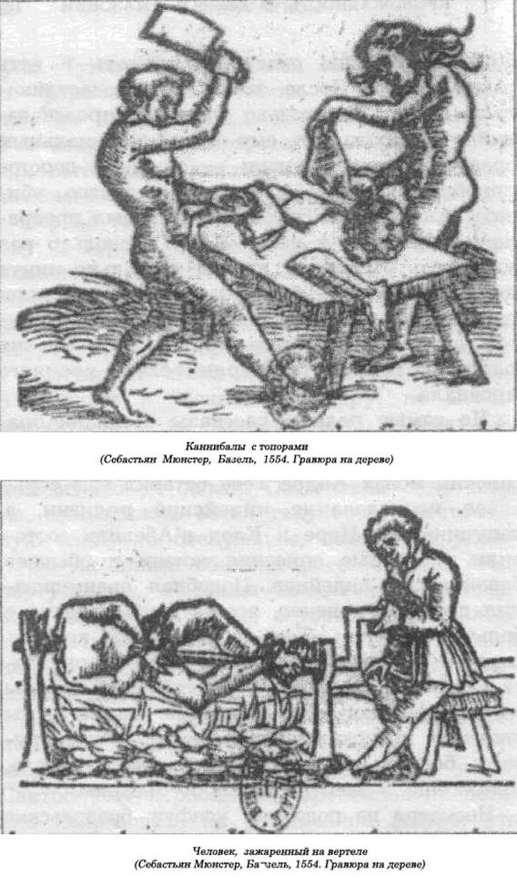
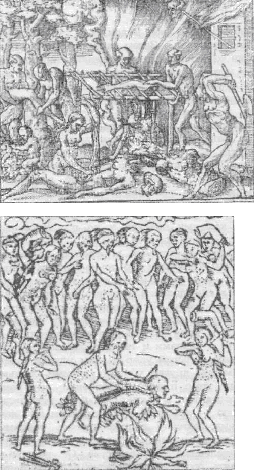
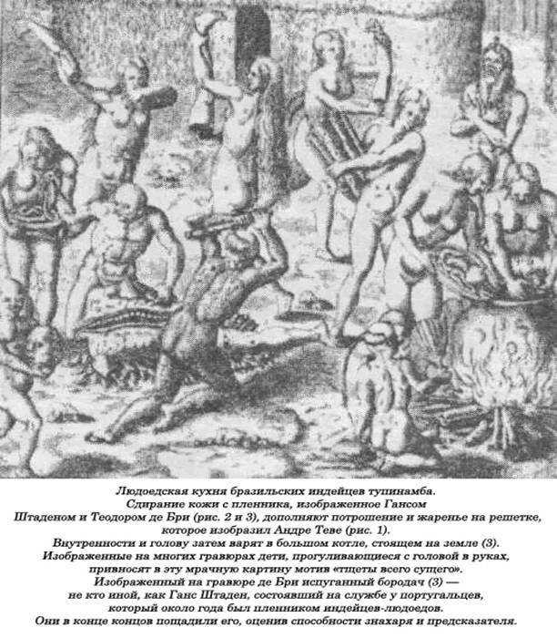
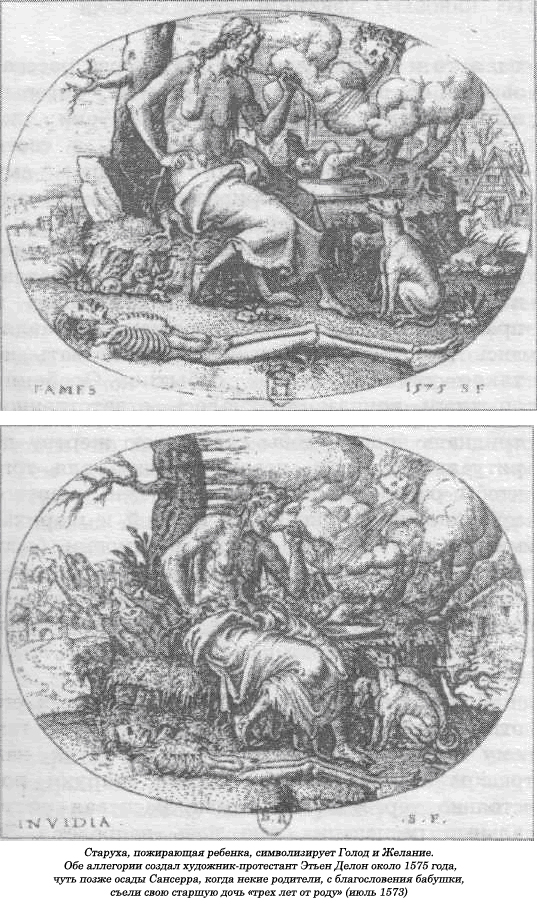
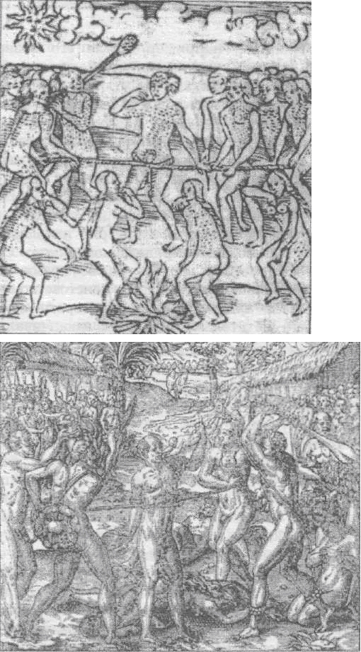
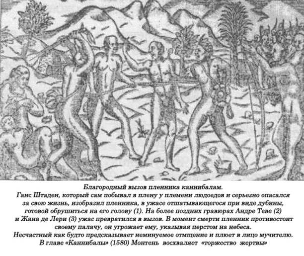

Кровожадность в дебрях Амазонки.
Что общего между такими людьми, как знаменитый французский писатель-моралист Мишель Монтень, не менее известный французский писатель-реалист Гюстав Флобер и художник-график Теодор Жерико? На этот вопрос возможны два ответа: одно и то же место, одна и та же тема. Место — это город Руан с его Сеной, впадающей в Атлантический океан, откуда началась эпоха Великих географических открытий, связанная с Большими и Малыми Антильскими островами и Бразилией. Впоследствии, добившись сытного буржуазного благополучия, он отгородился от остальной страны излучиной своей реки и философскими идеями. Тема — это каннибалы, явившиеся сюда в качестве посланников поистине Нового Света, высадившиеся здесь среди бревен, тюков с хлопком и мешков, набитых пухом и пером. Они оказались здесь, в этом городе, в самой глубине Нормандии, на едва заметном пороге океана, от которого сюда доносятся лишь слабые, чуть слышные его ворчания, нарушающие здешнюю первозданную тишину. Первая встреча произошла в 1562 году. Руан только что отбит королевской армией у протестантов. Прорвавшись через брешь в стене возле порта Сент-Илэр, французские войска под командованием герцога Франсуа де Гиза и коннетабля Анн де Монмаранси в течение суток разграбили город. Потом, в продолжение нескольких недель шли казни еретиков, которые целых полгода безраздельно господствовали в этом городе. Началось сведение счетов. Когда наконец все успокоилось, сюда пожаловали повелители Франции: двенадцатилетний король Карл IX и его мать, всемогущая Екатерина Медичи. Вскоре там объявился и Монтень.
И вот на фоне завоеванного после долгой борьбы, полуразрушенного города происходит событие, лишь на первый взгляд ничтожное, не заслуживающее внимания: только что доставленные из Бразилии каннибалы с кислыми физиономиями разглядывают Европу, гордящуюся своей высокой цивилизацией, о которой им столько раз талдычили миссионеры, прославляя на все лады ее достоинства. К ним, однако, проявляют повышенный интерес, оказывают всевозможные знаки внимания. Сам король, оказывая дикарям честь, принимает их у себя, долго беседует с ними. Перед их глазами — все великолепие королевских апартаментов, вся роскошь королевского двора, этот красивый город, скорее то, что от него осталось после месяца осады и испытаний. Но они едва удостаивают все это небрежным, критическим взглядом. Никаких восторгов, никакого восхищения — лишь удивление и сомнение. От их ответов их королевское величество испытывает только смущение. Они его озадачивают. А дикари с удивлением разглядывают этого юного короля, совсем мальчишку, и, указывая на соседство бедняков с богачами, спрашивают, почему «те терпят такую несправедливость», почему они не хватают богачей за горло, не предают огню их роскошные дома.
Монтень и сам идет на риск, пытаясь поговорить с ними. Но его вопросы в отличие от короля носят политический характер, словно он по своей воле оказался на их территории, чтобы стать представителем каннибалов здесь, во Франции. Его одолевает любопытство. Ему ужасно хочется знать, как функционирует монархия у дикарей. Каковы привилегии короля Бразилии? Первым идти в бой, отвечают ему. Сколько воинов в его армии? Четыре или пять тысяч — столько, сколько могут заполнить свободное пространство, отвечает ему вождь, обводя широким жестом вокруг себя. Матросы называют его «королем». Какие почести кроме воинских ему оказывают? Когда он посещает свои деревни, то местные жители вырубают в густом лесу для него специальные тропинки, чтобы он смог беспрепятственно по ним передвигаться...
Это были каннибалы, индейцы племени тупинамба, и они уже не раз приезжали в Руан.
Племя тупинамба — одно из самых крупных в Бразилии, его владения протянулись по океанскому побережью от того места, где ныне находится бывшая столица Рио-де-Жанейро, к северу, вплоть до устья реки Амазонки. Это племя является составной частью более обширной языковой группы индейцев, известной под названием просто тупи. Тупинамба славились своими странными формами человеческих жертвоприношений. Все их описания в основном относятся к XVI веку, когда португальцы, выбиваясь из сил, пытались завладеть этой, казалось, нескончаемой прибрежной полосой Бразилии.
Первая экспедиция сюда состоялась в 1500 году, а первые контакты тупинамба с португальцами относятся к 1511 году. Но и столетие спустя, в 1618 году индейцы все еще оказывали сопротивление португальцам на севере страны. Португальские конкистадоры в отличие от своих испанских коллег, действовавших в Мексике и Перу, не могли рассчитывать на молниеносную победу. В Бразилии не было единой монархии, и поэтому захват одного, даже самого могущественного монарха, ничего, по сути дела, победителю не давал. Обезглавив одно племя, приходилось вести такую же ожесточенную войну со следующим, потом с другим.
Об их диких обычаях рассказывали сами португальцы, а также многие путешественники из других стран, которым приходилось побывать в числе пленников и пережить немало неприятного в ожидании своей дальнейшей судьбы.
Среди них особое внимание привлекает немецкий канонир Гано Штаден, которого индейцы захватили в 1552 году возле порта Сантос. Ему первому из европейцев предстояло испробовать на собственной шкуре, что такое человеческое жертвоприношение, но ему удалось избежать смерти только потому, что он искусно симулировал зубную боль, а индейцы опасались убивать и есть таких людей. После этого ему посчастливилось сделать несколько удачных предсказаний, что позволило ему стать официальным оракулом этого племени — слишком дорогое приобретение, чтобы его безжалостно убивать. Англичанин Энтони Найвет был превращен индейцами в раба, и ему несколько раз удавалось убегать от них за несколько минут до ритуального убийства. Наконец дикари сделали его своим военным советником. Другой англичанин, Питер Гардер, добился их расположения, став хранителем военного арсенала.
Но самые полные рассказы о жизни бразильских каннибалов поступали от французских клириков, которые начали странствовать по Бразилии очень давно. Так, францисканский монах Андре Теве оставил нам серьезное исследование индейской религии, а капуцины Ив Ивре и Клод д'Абевиль составили подробные описания жизни и обычаев бразильских индейцев. Подобная евангелизация дикарей, конечно, всегда была связана с большим риском. Так, в 1556 году корабль первого епископа Бразилии Перо Фернандеса Сардиньи разбился у берегов этой страны — сам епископ, два канонира и две дамы знатного происхождения вместе со ста другими белыми людьми были раздеты догола, принесены в жертву богам и съедены.
Несмотря на подобный конфуз, бразильские туземцы владели какой-то особой аурой, заставляющей уподоблять их образу благородного дикаря, и это происходило задолго до того, как в мире стало известно о таитянцах. Такие монолитные империи, как империи ацтеков и инков, производили должное впечатление на конкистадоров и вызывали у них отвращение. Более раздробленные, дружелюбные бразильские племена пользовались у них совершенно иным отношением. Монтень долго разговаривал с тремя тупинамба в Руане. В своем очерке «О каннибалах» он использовал все достоинства тупинамба, чтобы подвергнуть язвительной критике французское общество. Во Франции вскоре начался настоящий культ бразильских индейцев тупинамба. В 1550 году возле Руана, в честь визита в город французского короля Генриха II и его супруги Екатерины Медичи, на лугу даже были устроены искусственные джунгли для привезенных из далекой Бразилии дикарей вместе с диковинными попугаями и обезьянами. В празднествах принимали участие три сотни обнаженных дикарей.
Руан. 1853 год. Гюстав Флобер может считать 26 декабря вполне удачным днем — он побывал у своего врача, парикмахера, посетил любовницу, своего приятеля Луи Буйе и, конечно, «дикарей». Но эти — далеко не те, которых привозили сюда триста лет назад. Все тупинамба за последние десятилетия были почти поголовно уничтожены, и теперь вместо них демонстрировались кафры из Южной Африки, туземцы со свирепыми нравами. Капитализм, по-видимому, дал знать о себе и там. Теперь это не были пропитанные духом свободы собеседники, которых удостоил своим вниманием сам король Франции, а лишь жалкая кучка волосатых животных, издающих нечленораздельные крики, сгрудившихся, словно обезьяны, возле горшка с жарким. Они и не помышляли о встрече с представителями местного светского общества. Спектакль теперь предназначался для простых работяг или для романтиков — любителей экзотики. Монтень разглядел в бразильских туземцах благородство и рыцарство. Флобер увидел в них лишь толпу «примитивных» людей, один только внешний вид которых внушал ему почти священный ужас. «Мне казалось, я вижу первых людей на земле. Они все еще прыгали вместе с жабами, ползали вместе с крокодилами». Ни о каком разумном диалоге с ними и мечтать не приходилось. Так как у кафров нет даже рудиментарной политической организации, то все общение с ними ограничивалось лишь поблескиванием глаз и странными телодвижениями. Диалог, который когда-то у Монтеня был философским, сейчас превратился в шутовское подмигивание.

И Монтень и Флобер говорят о трудностях, которые они испытывали при общении с туземцами. Монтень клянет своего переводчика, упрекая его в тупости, которая помешала ему как следует пообщаться с бразильцами-каннибалами. У Флобера то же самое, только по другой причине. Говорить-то с ними, в общем, не о чем. Как изменились туземцы за последние два века! Монтень обожал своих бразильцев, даже пригласил нескольких каннибалов к себе домой, где угощал их чаем. Флобер же не имел подобного желания, кроме какого-то смутного сексуального влечения к их странным женщинам. Да, за это время произошло столько событий, которые сильно испортили отношения Запада с туземцами. И личность самого дикаря стала совершенно иной. Уже нет прежнего бразильца со смуглой кожей, свободного человека в свободной меновой экономике. Теперь ему на смену пришел чернокожий потенциальный раб, представляющий сам собой живой товар, который можно продать на рынке.
Образ кафра можно уподобить облику негра, изображенного на знаменитой картине Жерико «Плот «Медузы». Большой корабль «Медуза» 5 июля 1816 года затонул в открытом море, и спасшиеся на спущенном в воду плоту смогли выжить только благодаря тому, что съели одного из товарищей по несчастью. Жерико, как и Флобер, родился в Руане и, конечно, знал об устраиваемых там время от времени «выставках» туземцев. Когда он узнал о кораблекрушении «Медузы», он для своей картины воспользовался представлениями о каннибалах, поместив среди жертв кораблекрушения четырех негров, которые первыми приступают к откровенному каннибализму.
В истории приемов, оказываемых в Европе каннибалам, можно заметить определенное сходство между христианским представлением о мистическом теле и выбором наиболее благоприятной для дикаря гипотезы — ритуала мести, в котором голод, потребность в пище отходят на второй план. Такова, в сущности, стратегия всех миссионеров, от Бразилии до Канады, которые стараются опровергнуть всеми доступными способами гипотезу о каннибализме как о жизненной потребности, заменив ее спасением души индейца, которая еще сильнее затемнена злостными проделками Сатаны.
Но как сделать правильный вывод? Как точно описать повадки, обычаи и обряды бразильских каннибалов, если эта обширная страна до сих пор еще толком не исследована из-за труднодоступности некоторых ее частей.
Судите сами.
Один только бассейн реки Амазонки занимает площадь величиной почти в три миллиона квадратных миль, по которой протекает полноводная река длиной четыре тысячи миль с такими многочисленными притоками, которых и сосчитать невозможно, не говоря уже о том, чтобы обследовать и дать им свое название. Возьмите другой регион — Матту-Гроссу, расположенный далее к югу, в котором полно своих опасностей, своих преград. И третий, Гран-Чако, расположенный на аргентино-парагвайской границе. Пятьдесят тысяч квадратных миль территории непроходимых джунглей, болот и сообщающейся водной системы. В Южной Америке такие регионы, как Бразилия, фактически не позволяют до сих пор правильно полностью нанести их на карты. До сих пор многочисленным экспедициям не удалось открыть их тайны. Множество их поглотила бездна, как, например, произошло с полковником Фосетом и его спутниками.
Вполне вероятно, что где-то за этими непреодолимыми преградами, за обширными болотами и быстрыми речками, густыми джунглями люди продолжают жить так, как когда-то жил доисторический человек.
Информация, полученная из этих мрачных, страшных регионов, носит куда более фрагментарный характер, чем сведения, доставляемые также из довольно опасных территорий Земли, таких, как бассейн реки Конго, отдельные части Нигерии и темные закоулки Восточной Африки. В этих регионах было создано совсем немного религиозных миссий, но даже из них до настоящего времени выжили одна-две. Всего нескольким журналистам, таким, как Г. У. Бейтс, удалось изучить небольшой участок Амазонии и написать и издать «Путешествия натуралиста по Амазонке». Десять лет спустя другой, не менее известный, натуралист Рассел Уоллес, вместе с Чарльзом Дарвином, изобретателем принципа естественного отбора, опубликовал небольшую книгу под названием «Путешествие по Амазонке». Все это происходило более ста лет назад, и хотя с тех пор в этом регионе мира побывали куда лучше оснащенные экспедиции, все равно над этими местами висит какое-то проклятие, там существует некая непроницаемая тайна, как зловонные миазмы, идущие из вонючих болот и густого подлеска, протянувшихся на тысячи квадратных миль.
Около пятидесяти лет назад член Королевского географического общества А. Г. Кин создал, все назвав собственными словами, правдивую картину региона, расположенного в восточной части Перу, где течет река Укайали, на границе с Бразилией, впадая потом в Амазонку.
«Племя амаюка, живущее на берегах реки Укайали, возле перуанской границы, неоднократно обращали в христианство, и всякий раз дело заканчивалось насильственной смертью миссионеров. А члены племени кашибо, тоже живущего на берегах этой реки, поедают своих престарелых родителей, но делают это скорее из-за религиозных чувств, чем из-за простой жестокости. Однако религия не имеет ничего общего с их привычкой имитировать крик дичи, потом умерщвлять охотников, позволять их трупам разлагаться, а потом их поедать.
До обращения в христианство среди индейцев племени кокома из района Уалага, перебравшихся теперь на берега Укайали, существовала практика поедания своих мертвых родственников, а также обычай выпивать специально приготовленные напитки с измельченными в порошок их костями. По всеобщему поверью, родственнику куда уютнее в теплом теле друга или родственника, чем в холодной земле, в могиле. Еще более ужасные вещи рассказывают о тупинамба, тапуйя и ботокудах.»
Когда Кин добрался до южной оконечности Перу, до ее границы с Бразилией и Боливией, осуждение им обитателей этого региона принимает особенно гневную форму:
«За границами тех земель, где живут «ирокезы юга», как иногда называют ауков Южного Перу, все погружено во мрак, повсюду видны следы запустения. Человек человеку волк! Таков процветающий здесь лозунг. «Охота за черепами», каннибализм в его самой отталкивающей форме, грубое, скотское обращение с женщинами и детьми с особой силой проявляются среди жителей Амазонии и бразильских аборигенов.»
В его описаниях чувствуется нечто очень религиозное, евангелическое. И кажется, он подобен отважным миссионерам, таким, как Хант и Карджил, которые писали о туземцах островов Фиджи. Но его книга появилась относительно недавно.
Рассел Уоллес, писавший более ста лет тому назад, был действительно весьма наблюдательным натуралистом, он не позволяет себе проявлять и тени эмоциональности, когда сухо пишет о некоторых обычаях, бытующих у амазонских племен, с которыми ему довелось вступать в контакт.
«Почти всегда они хоронят своих мертвых дома, вместе с их браслетами, кисетом для табака и прочими безделушками и украшениями. Они хоронят умерших в тот же день, когда наступила смерть. С этого момента до погребения родственники и родители носят траур по усопшему, не прекращая рыданий. Через несколько дней приготавливают громадное количество «каксири», и все друзья и родные умершего приглашаются на поминки; все гости плачут, поют и танцуют, чтобы почтить тем самым память о нем. В некоторых больших домах можно насчитать до сотни могил, ну а если дом маленький, то могилы роют и во дворе.»
Индейцы племен тариана и тукано, как и некоторые другие племена, через месяц после смерти расчленяют уже разложившийся к этому моменту труп, который кладут в большую кастрюлю и варят на огне, покуда из трупа не выварятся все летучие вещества с чудовищной вонью и не останется черная углевидная масса, которую потом тщательно растирают в порошок и помещают в несколько больших чанов, сделанных из ствола выдолбленного дерева, которые заливают изрядным количеством «каксири». Затем это выпивается всей компанией. Они считают, что таким образом им передаются все достоинства почившего родственника. Индейцы племени кабеуш и ваупеш — настоящие каннибалы. Они едят членов чужих племен, которых убивают в бою, кроме того, они специально затевают войны, чтобы обеспечить себя достаточным количеством человеческого мяса. Если у них оказывается слишком много сырья и они не в силах все съесть сразу, то коптят трупы, чтобы сохранить их в течение длительного времени впрок. Эти индейцы сжигают своих мертвых и их пепел смешивают с «каксири» точно так же, как это делают индейцы тариана и тукано. Г. У. Бейтс в своей книге «Путешествия натуралиста по Амазонке» пишет о племени мажерона, которое живет на территории протяженностью несколько сотен миль по западному берегу реки Джауари, одного из самых полноводных притоков Амазонки, протекающего неподалеку от границы с Венесуэлой:
«Это свирепые, неукротимые, враждебно настроенные люди, как и арары. Они тоже каннибалы. Плавание по реке Джауари практически дело невозможное, так как в кустах на берегу, повсюду в засаде сидят мажероны, поджидая путешественников. Они их сразу хватают и тут же убивают, особенно белых.
За четыре месяца до моего приезда два молодых парня смешанной расы (почти белые) отправились на реку Джауари, чтобы там поторговать, так как последние полтора года маджероны не проявляли особой агрессивности. Через пару дней после их ухода стало известно, что индейцы убили их стрелами, а трупы их, поджарив, съели...»
Миссионерскому обществу Южной Америки на самом деле удалось, правда, на короткое время, организовать свою миссию в районе с менее враждебно настроенными индейцами в Эль-Гран-Чако. Один из священников, по имени У. Барброк Граб, обычный шотландский миссионер, стал настоящим пионером-исследователем в этой вселяющей ужас местности. Около тридцати лет назад он выпустил книгу, в которой рассказал о своем опыте первопроходца. Он вносит в свое повествование прозорливость истинного ученого, знающего во всем меру, что не может не способствовать большей убедительности того, о чем он пишет:
«Хотя каннибализм в настоящее время в Чако не практикуется, у местных жителей полно историй об этом. Это либо вымышленные, либо подлинные рассказы о каком-то далеком племени. А может, дает о себе знать давно забытый обычай. Эти каннибалы, судя по всему, живут на дальнем Западе, и там среди выходцев племени гуарани такая практика все еще в ходу. Приведу вам один из таких рассказов. Три склонных к авантюрам представителя племени ленгуа, пожелав узнать, что находится в западу от их земель и какие люди там живут, отправились туда, чтобы самим во всем убедиться. Их путешествие продолжалось несколько месяцев, и вот неожиданно они встретились с двумя мужчинами, которые приветствовали их в весьма дружелюбной манере. Хотя они и не понимали их языка, но догадались, что те хотят пригласить их в гости в свою деревню. Они им делали какие-то знаки, и трое любопытных путешественников отправились за ними следом. Когда они приблизились к деревне, в нос им ударил тошнотворный запах, что немало их удивило. Тамошние жители сердечно встретили их, накормили, предложив такую пищу, которой прежде им есть не доводилось. Хотя все индейцы были очень миролюбиво к ним настроены, повсюду в этой деревне было что-то такое странное, необъяснимое, от чего гостям становилось не по себе, вызывало безотчетные подозрения. Они не могли объяснить, почему чувствуют себя не в своей тарелке, почему им так неловко, почему они ведут себя столь неуверенно. С наступлением сумерек все население деревни — мужчины, женщины и дети — покинуло деревню. Они пошли за дровами, которые заранее заготовили в лесу. Кроме того, женщины с детьми решили еще натаскать из реки воды. Трое путешественников из племени ленгуа давно заметили несколько высоких глиняных горшков, стоявших на огне. В них что-то варилось. Не в силах преодолеть любопытство, они, очутившись в одиночестве, решили осмотреть содержимое горшков. Подойдя поближе к одному из них и заглянув в него, путешественники, к своему ужасу, обнаружили пальцы человеческой руки, выступавшие из варившегося куска мяса. Помешав в горшке краем лука, они обнаружили там еще и человеческую ногу. В следующем горшке они увидели голову человека. Придя в ужас от такой страшной картины, они со всех ног кинулись в лесную чащу, а оттуда прямиком направились домой».
Граб добавляет, что, хотя ему приходилось слышать множество подобных историй, у него есть все основания полагать, что сами индейцы региона Гран-Чако каннибализмом не занимаются. Такая практика не чужда, скорее, индейцам племени чиригуано, на границе с Эль-Чако, и об их привычках и обычаях чако хорошо знали.
Граница между Бразилией и Северным Перу проходит как раз по реке Джауари, в том месте, где она шире всего. Это один из притоков реки Амазонки, и данный регион считается самым опасным и труднопроходимым.
В этой местности около ста лет назад появился исследователь Альгот Ланг, который хотел все сам изучить досконально. Нельзя сказать, что он ничего не знал об этом районе — здесь до него уже побывали несколько экспедиций, организованных синдикатами по производству резины, ибо как раз тут были найдены деревья, дающие сырье для ее изготовления. Большие фирмы продолжали свою разведку, хотя семена таких деревьев уже были давно вывезены из Бразилии в Англию, где из них вырастили саженцы, которые впоследствии были отправлены в Малайзию и Индонезию. Сообщения об условиях, в которых проходили подобные экспедиции, не оставляли у Ланга никаких сомнений на сей счет. Но все же Ланг под влиянием минуты принял решение присоединиться к одной из таких экспедиций и написал о своем исследовательском опыте подробный отчет. Змеиные укусы, неизлечимая «бери-бери», тропическая лихорадка и враждебно настроенные индейцы стали фатальными для многих его спутников и чуть ли не стоили жизни ему самому.
«У меня не оставалось и проблеска надежды, а я уже давно не верю в чудеса. Восемь дней подряд у меня нечего было есть — я приканчивал остатки зажаренной на костре обезьяны, подстреленной молодыми индейцами. Лихорадка вытрясывала из меня душу. Я остался совершенно один: вокруг — на тысячи и тысячи миль ни одной живой души, абсолютно дикая, первозданная природа, непроходимые джунгли. Я несколько цинично размышлял о цепкости жизни, о той цепочке, которая еще связывала меня с живыми, и только теперь я целиком осознал, что значит для человека борьба за существование, особенно для такого, как я, загнанного в безвыходное положение. Я был уверен, что мне — конец.
Всю ночь напролет я полз, полз на карачках, через густой пролесок, не имея четкого представления, в каком направлении я двигаюсь. Любой попавшийся на моем пути зверь мог положить конец всем моим страданиям. Но сырая утренняя свежесть в этих местах оказывала на меня благотворное влияние и восстанавливала не только физические, но и душевные силы. Моя одежда превратилась в лохмотья, а колени в два громадных синяка...
Мне показалось, что я вижу людей, много людей — мужчин, женщин, детей, большой дом. Вижу попугаев в ярком оперении, слышу их гортанные, пронзительные вопли. Громко закричав, я упал вперед. Маленькая курчавая собачка принялась лизать мне лицо. И тут я провалился — память мне отказала...
Я очнулся в удобном гамаке в большой темной комнате. Я слышал чьи-то голоса. Ко мне подошел какой-то мужчина и молча уставился на меня. Я не знал, где я, и мне казалось, что все это происходит со мной не наяву, что я в бреду или сошел с ума. Когда я вновь открыл глаза, то увидел перед собой женщину —- она склонилась надо мной, держа в руках тыкву с куриным бульоном. Я медленно выпил его, не чувствуя никаких мук голода, не зная, не будучи уверенным до конца, жив я или уже мертв.
Только на пятый день, как мне сообщили потом, я начал приходить в себя. Оказывается, я нахожусь в «малоке», в деревне племени манжерона, этих известных и свирепых каннибалов.
Когда я смог стать на ноги и немного передвигаться с помощью двух женщин, меня отвели к вождю племени. Это был хорошо упитанный крепкий мужчина, и его наряд значительно отличался от остальных соплеменников. На лице у него блуждала приятная, добродушная улыбка, он постоянно обнажал ровные ряды остро заточенных зубов. Хотя его улыбка вселяла в меня уверенность в благоприятном исходе дела, я не мог отделаться от тревожной мысли, что я — среди страшных каннибалов, репутацию которых в этом регионе бассейна Амазонки никак не назовешь безупречной».
Он вспоминает, что эти люди знаками дали ему понять, что он может оставаться у них, пользуясь их гостеприимством, сколько ему будет угодно.
«Прежние способности возвращались ко мне, и я, глядя на этих туземцев, нашел, что они в самом деле странные люди. У каждого индейца в носу были вставлены два пера — издали их можно было принять за усики. На вожде был длинный, до колен, наряд из перьев. На женщинах вообще не было никакой одежды, только деревянное кольцо овальной формы, проткнутое через нижнюю губу, и разукрашенные замысловатыми узорами лица, руки и туловища. Они предпочитали алую и черную краски, которые добывали из особых растений.
Я очень скоро понял, что не имею права отказываться от любого поставленного передо мной блюда, каким бы отвратительным или тошнотворным оно ни было. Однажды сам вождь пригласил меня к себе домой, чтобы угостить обедом. Меню состояло из нежной жареной рыбы, которая мне очень понравилась; за ней принесли трех жареных попугаев, зажаренных с бананами, что, в общем, тоже было не так плохо, но когда подали суп, меня чуть не стошнило — я просто не мог сделать ни глотка. Я чуть не задохнулся от этого угощения.
Мясо в этом супе было жестким и, по-видимому, давно протухло, а травы для приправы были такими горькими, издавали такой дурной запах, что у меня тут же связало все во рту и я не мог сделать ни одного глотательного движения. Вождь, бросив на меня недовольный взгляд, нахмурился. И тут я вспомнил те дни, которые провел в джунглях, страшные муки голода, свою жизнь, висевшую на волоске. Плотно зажмурив глаза, я заставил себя проглотить тарелку супа, призывая на помощь самовнушение. Хотя я с уважением относился к этим импульсивным, неразумным детям лесов, я знал, насколько они беспощадны, стоит лишь нанести им легкую обиду. Жизнь моя зависела теперь только от них...
...Очень скоро у меня появились доказательства того, в чем я сильно подозревал своих спасителей: индейцы племени манжерона до сих пор еще каннибалы. В это время в их довольно незамысловатые, но тем не менее смертоносные ловушки, ставить которые в джунглях они большие мастера, угодили двое перуанских «кабокло», индейцев смешанной расы. Их трупы, обнаруженные патрулем, были доставлены в «малоку», где в этой связи предстояло организовать большой праздник, связанный с каким-то непонятным религиозным обрядом.
Прежде всего трупам отрубили руки и ступни, после чего все индейцы собрались у своего вождя. Он, казалось, был очень доволен тем, что происходит, и, постоянно кивая головой, улыбался. Он говорил очень мало. Как только аудиенция у него была закончена, вся община начала подготовку к празднику. Были приведены в порядок места для костров, вымыты горшки и кувшины, а за этим последовала процедура, которая привела меня в ужас. Мне ничего не оставалось, как улизнуть оттуда, забраться поскорее в свой гамак и притвориться спящим, — я знал еще с того обеда у вождя, что меня непременно заставят принять участие в чудовищной трапезе — разделить с ними это угощение из человеческой плоти. Мне было за глаза достаточно понаблюдать за тем, как они сдирают мясо с ладоней рук и ног и как очищают эти «деликатесы» в жире тапира.
Когда я увидел, как нетерпеливо они толпились возле костров, заглядывая в горшки, не поспело ли мясо, у меня в голове возникла леденящая душу мысль. Ведь они запросто могут поддаться соблазну и отправить в эти горшки рассеченное на куски мое тело...»
Таковы современные наследники тех «благородных», по выражению Мишеля Монтеня, бразильских каннибалов. Вернемся к их предкам, индейцам племени тупинамба. В отличие от ацтеков с относительно развитой государственностью тупинамба было племенем с простыми институтами. Они главным образом возделывали землю, выращивая на ней маниоку, главный продукт их питания. И все же, хотя и те и другие жили в разных концах обеих Америк, между ними существует сходство в формах религиозного жертвоприношения. Как индейцы тупинамба, так и ацтеки старались в бою не убивать врагов, а захватывать их в плен. У тех и у других существовал тщательно разработанный ритуал пленения, те и другие убаюкивали жертву показной «демонстрацией» своей любви и благожелательности; те и другие придавали жертвоприношению подобие гладиаторского поединка, когда жертве, привязанной, правда, веревкой, давали возможность обороняться от наступающих с помощью «потешного» оружия или метательных предметов. Пленники тупинамба, как и у ацтеков, должны были безропотно служить своему хозяину, тому воину, который их захватил на поле брани, и добровольно принять смерть. Можно сослаться на множество примеров, когда пленники предпочитали ритуальную смерть перспективе их выдачи свирепым португальцам.
Когда воин тупинамба захватывал пленника, он, похлопав того по плечу, обычно заявлял: «Будешь моим рабом». Начиная с этого дня пленник должен был беспрекословно служить своему новому хозяину. Следует отметить глубокий нравственный эффект от такого ритуала пленения. Когда отец Ив д'Эрве спросил у одного индейца, почему тот не хочет ему служить, тот ответил: потому что он не захватил его в бою и не похлопал рукой по плечу, как того требует обычай. Немецкий канонир Ганс Штаден, о котором мы говорили выше, рассказывает, что далеко не всегда обходилось довольно гладко. Он-то точно знает, ведь ему самому пришлось долго находиться в шкуре пленника. Иногда между воинами возникал спор по поводу того, кого следует считать настоящим хозяином пленника, захватившим его на поле боя. «Однажды двое заспорили по поводу меня. Первый индеец утверждал, что я его пленник, так как он первым похлопал меня рукой по плечу. А второй заявлял, что именно он захватил меня в плен. Они были из разных деревень, и никому из них, вполне естественно, не хотелось возвращаться домой с пустыми руками. Наконец, вождь племени, которому тоже хотелось стать моим хозяином, рассудил, что меня следует живьем доставить в деревню, чтобы меня там увидели женщины племени и смогли бы оценить по достоинству, только после этого они умертвят меня способом «кавивим пипиг», то есть они устроят праздник, для чего приготовят пьянящий напиток, а потом сожрут меня всего без остатка». Такое решение вождя всем понравилось, и мне на шею набросили четыре веревки...»
После такого первого испытания пленников вели в деревню по «тропе войны», чтобы там продемонстрировать всем своих новых рабов. Штаден рассказывает, как его вместе с другими пленниками доставили в деревню, заставляя по дороге все время танцевать и размахивать трещоткой. Перед вступлением на территорию деревни пленникам обязательно брили лбы и выбривали брови, потом все тело смазывали либо смолой, либо медом, а к туловищу прикрепляли перья. Затем наступала очередь важного события — хозяин пленника приводил его на могилу своих родственников, где он принимал участие в церемонии возрождения или посвящения, так как ему предстояло именно на этом месте принять впоследствии смерть, чем оказать честь предкам своего владельца. Но фактически смерть сразу не наступала — иногда до этого события проходило несколько лет. За это время одни индейцы относились к пленникам с любовью и заботой, а другие не выражали к ним никаких иных чувств кроме глубокого презрения.
Штаден до сих пор остается идеальным очевидцем первого периода жизни пленника, так как ему повезло и не пришлось пережить окончательную стадию.
Когда его привели в деревню, то местные жители встретили его точно такими танцами и песнями, которые пленник увидит и услышит в еще далекий для него день принесения его в жертву. Но отношения любви-ненависти начали проявляться с первых же минут, когда к нему угрожающе приблизились индейцы с палками и такими словами: «Я нанесу тебе сильный удар и этим ударом отомщу за моего друга, убитого твоими людьми». После этого пленника, разрешив ему немного отдохнуть в гамаке, за шею потащили к вождю — это было продолжением церемонии приема, которая сопровождалась танцами.
Хозяин пленника брал на себя за него определенные обязательства. Он не мог оставлять его голодным, даже если ради этого ему пришлось бы поделиться с ним своей трапезой. Так как пленника индейцы таким образом принимали в свой клан, его через несколько дней после прибытия в деревню обычно женили либо на дочери владельца, либо на одной из его нелюбимых жен. Иногда, как это делается у ирокезов, пленников заставляли жениться на вдовах, муж которых погиб в бою. Им позволялось также иметь половые сношения с незамужними девушками деревни. Новоявленная жена должна была всячески заботиться о своем муже, лелеять его, чтобы он чувствовал себя у нее как дома. Пленнику предоставлялась почти полная свобода передвижений, ему даже выделялся участок земли для обработки или места для ужения рыбы и охоты. И все же, несмотря на все эти привилегии, он не утрачивал своего статуса военнопленного. Все его дети, зачатые в таком браке, предавались смерти в малолетнем возрасте. Теве, например, видел, как убили двух семилетних детишек. Иногда их приносили в жертву в тот же день, что и отца.
Иной раз с пленником обращались очень хорошо, а в другое время постоянно осыпали его оскорблениями. Ему никогда не удавалось ни на минуту забыть о своем двойном статусе, на всех праздниках он должен был присутствовать в наряде из пуха и перьев, как и подобает пленнику. Когда он в таком виде шел по деревенской улице, жители бросали в него перьями попугая, напоминая ему лишний раз, что судьбой ему уготована скорая смерть. Иногда, чтобы посильнее унизить его, его приводили на сельские праздники на веревке. Продолжительность такой особой формы пленения была различной. Все зависело от пленников. Стариков очень скоро убивали, молодым разрешали жить в племени в течение по крайней мере нескольких лет, и такой срок иногда достигал двенадцати, а то и пятнадцати лет. Ив Д'Эрве рассказывает об одном пленнике-ребенке, который вырос среди своих захватчиков, они уже сожрали его мать, но уверенность в своей печальной судьбе, однако, не мешала ему чувствовать нежную привязанность к приемным родителям-индейцам.

Как только старейшины назначали последний, фатальный для жертвы день, в деревне начиналась лихорадочная подготовка к празднику. К соседним племенам направлялись гонцы с приглашением пожаловать на такое знаменательное событие. Особенно опытным воинам поручалось ответственное задание — свить крепкую веревку длиной тридцать ярдов, чтобы связать ею жертву до ритуала. Делалась новая дубинка, для того чтобы раскроить ему череп. В день жертвоприношения ее украшали тетивой и шариками из хлопка. Ритуальные церемонии были такими же продолжительными, как у ацтеков. В первый день, по свидетельству такого очевидца, как отец Теве, пленнику снова брили лоб, тело его разрисовывалось краской и украшалось перьями.
После завершения этих формальностей его отправляли на отдых в свою хижину, но там ему вряд ли удавалось поспать, так как раскрашенные черной краской старухи постоянно теребили его гамак, распевая ритуальные песнопения всю ночь напролет. За этим следовали еще два дня непрерывных танцев и песен, но самые странные ритуалы припасались на четвертый день торжеств. Прежде всего пленника мыли, очищали в реке, а потом, например, после его возвращения, организовывались «потешные» бои. Его заставляли бежать по тропе, делая вид, что он убегает, и тогда его настигал какой-нибудь воин.

На пятый день пленника вели к месту казни. Здесь с его шеи снимали веревку и опутывали ею туловище, оставляя свободными руки и ноги. Перед ним складывали фрукты с твердой кожурой размером с яблоко, небольшие камни, в основном гальку. Он швырял их в зрителей, что было его определенной, чисто символической местью им. Иногда во время акта мести он приходил в такое неистовство, что принимался кидать в индейцев горсти земли, когда его метательные снаряды заканчивались. Тем временем группа старух разжигала костер, на котором будет зажарено его тело. Главный палач в роскошном одеянии из перьев, взяв из рук этих ведьм дубинку, устремлялся к жертве с такими словами: «Разве ты не принадлежишь народу, который враг нам?».
Пленнику надлежало таким образом отвечать на этот вопрос: «Да, я очень сильный, я убил и съел нескольких ваших человек. Я очень смелый и буду продолжать нападать на ваших людей, я их съел немало». Палач обычно старался покончить со своей жертвой одним ударом, но она все время пыталась увильнуть. Иногда пленнику давали дубинку, чтобы он мог ею защищаться. Когда, наконец, он умирал, то детишкам позволяли обмазывать себя его кровью. Иногда им даже разрешали просовывать ручки в дыру в животе, чтобы вырвать оттуда его внутренности. Потом труп зажаривали, а куски распределяли всем присутствующим. Его язык и мозги предназначались главным образом молодым воинам, а ветераны довольствовались кожей с головы и другими частями тела. Половые органы, символ плодородия, отдавались женщинам. Для тех, кому мяса не доставалось, готовили отвар из костей рук и ног, который затем разливался по горшочкам. Каждый мог попробовать свою долю.

Рене Жирар в своей книге «Насилие и святость» рассказывает о религиозных ритуалах племени тупинамба для поддержки одной из своих главных тем — элементы парадоксальности в человеческих жертвоприношениях. Палача и жертву связывают узы дружбы и вражды. Среди индейцев тупинам ба бытовало представление о том, что если жертву предстоит убить во время ритуала, а потом съесть, то прежде пленника нужно принять в свою среду, а ведь он, как правило, был представителем враждебно настроенного к ним другого племени» Таким образом, его принятие — это лишь продолжительная подготовка его к смерти как универсального «козла отпущения», и эта концепция весьма характерна для мышления туземцев. Прежде пленника нужно осыпать оскорблениями, потом женить на родственнице, с любовью лелеять его и только потом совершить ритуальное убийство.
Если каннибалистская практика индейцев тупинамба — это уже далекое прошлое, то как в Бразилии, так и в других латиноамериканских странах она все еще не изжита до конца, о чем свидетельствуют появляющиеся время от времени в местной прессе рассказы о случаях каннибализма.
Если говорить о Южной Америке, то только Перу, единственная страна, может по праву считаться колыбелью высокоразвитой цивилизации на всем континенте. Человеческие жертвоприношения существовали здесь давным-давно, еще до периода инков, а у самих инков во времена испанского завоевания было немало способов принесения в жертву людей, особенно детей. Такие ритуальные убийства не привлекают к себе особого внимания исследователей, так, как, конечно, по зрелищности им не сравниться с кровавыми «представлениями» ацтеков.

У древних перуанцев не было письменности, поэтому до нас не дошли описания их верований и ритуалов. Испанские летописцы оставили обширный материал, рассказывающий о том, что они видели, но, так же, как это происходило в Мексике, их отчеты касались в основном внешних форм религии, а не ее внутреннего, потайного смысла. Но так как главной целью испанцев было уничтожение старых богов, то и такие религиозные формы вскоре перестали существовать, а повествования испанцев заканчиваются 1532 годом, когда могущественная империя инков капитулировала перед ста пятьюдесятью конкистадорами. Тем не менее мы располагаем многочисленными свидетельствами доинкского периода. Древние перуанцы славились своими великолепными ткачами и гончарами. Иногда доинкское искусство отражает жертвоприношение — мы видим отрубленные головы, другие части тела, и значение таких картин не вызывает ни у кого сомнений.
Самые первые свидетельства подобного рода поступили из окрестностей Касмы, города, расположенного на океанском побережье в двухстах милях к северо-западу от Лимы. В храме Серро Сечин, который был возведен около 2000 года до н.э., имеются несколько каменных стелл. На некоторых из них изображены мертвые тела людей, так как глаза у всех закрыты; на некоторых плитах отчетливо видны отрубленные головы жертв, а на рельефах различные части тела. Изображены на них в полный рост не только мертвецы, но и расчлененные тела.
В Паракасе, этом центре великой процветающей здесь с 2000 по 700 г. до н.э. цивилизации, расположенном на побережье к юго-востоку от Лимы, было обнаружено множество ритуальных захоронений, что свидетельствует о существовании тогда обычая, о котором упоминается в хрониках XVI века, — захоронение мертвых вместе с живыми. Некоторые из гробниц в Паракасе находятся в глубоких колодцах, в каменных камерах, напоминающих по форме бутылку. В них обычно покоятся от тридцати до сорока мертвецов, главным образом женщин и детей. По словам перуанского археолога Хулио Телло, эти останки принадлежат представителям разных социальных слоев; некоторые из них — в богатых мантиях, а другие, скорее всего слуги, завернуты в простые грубой выделки куски хлопковой материи.
В керамических урнах можно обнаружить детские трупы.

В другой части Паракаса, известной под названием «некрополь», было найдено множество тюков с мумифицированными трупами. В основном это старики, завернутые в множество слоев самого дорогого и роскошного текстиля. В этой части страны очень сухой климат — дожди обычно выпадают лишь раз в двадцать пять лет, а поэтому все тела находятся в отличном состоянии. На этой многослойной ткани, образцы которой находятся в Лимском археологическом музее, сохранились самые замысловатые узоры. Почти в каждом тюке на материи постоянно присутствует один и тот же мотив, которому ученые присвоили довольно прозаическое название — «Условное летающее существо с глазами». Этот образ настолько часто появляется, что его с полным основанием можно принять за символ смерти. В больших тюках более трети всего декоративного текстиля украшает это «существо с глазами», странная, кровожадная фигура. У нее широкий, скошенный рот, в одной руке череп, а в другой нож, а на теле полно отростков. Этот художественный мотив можно встретить не только на ткани, но и на гончарных изделиях. «Существо с глазами» — далеко не единственная фигура, которая держит в руке отрубленную голову; даже в лапах мифических птиц-кондоров и убийц-китов с перьями в лапах видны подобные трофеи. Художники из Паракаса часто изображают труп или отрубленную голову в нескольких сантиметрах от рта этих чудовищ, а это означает, что те пожирали своих жертв. Американские археологи Эдвард и Джейн Пауэлл Двайер считают, что каннибалистская сущность такого символизма не вызывает сомнения, и, таким образом, «существо с глазами», которое пользовалось таким уважением среди местной элиты, по сути дела, питалось человеческой плотью.
Цивилизация мочика, которая процветала на северном побережье Перу на протяжении первых веков христианской эры, знаменита высоким искусством местных гончаров. Разнообразные сосуды культуры мочика, множество из которых сохранилось до нашего времени, настолько выразительны, что их можно считать литературой, запеченной в глине.
Они рассказывают нам о богах и изображают человеческие жертвоприношения с редкой для Старого Света откровенностью. Так, на одном кувшине в этнологическом музее в Западном Берлине изображен человек, которого сталкивают со скалы, а на другом — бог в виде опоссума, который отрезает ножом жертве голову.
В статье, написанной доктором Элизабет Бенсон, приводится множество убедительных иллюстраций, свидетельствующих о человеческих жертвоприношениях в культуре мочика. На одном раскрашенном горшке главная фигура в центре окружена отрезанными руками и ногами с веревкой на ногах. Этого человека волокут две женщины, и его дальнейшая судьба не вызывает никакого сомнения. На другом сосуде в антропологическом музее Мюнхена представлены две связанные обнаженные человеческие фигуры, которым вот-вот должны снести головы. Элизабет Бенсон высказывает предположение, что на большинстве гончарных изделий культуры мочика, которые часто относят к группе «мать и дитя», на самом деле изображена жрица, уносящая свою жертву. «Дети» на таких изображениях очень часто напоминают либо жертв для приношения богам, либо пленников. На других узорах на разных уровнях встречается целая серия человеческих жертвоприношений, которые обычно увенчивают фигуры людей, которым отрезают головы какие-то чудовища.
Народность мочика разработала особую пытку, которая, по-видимому, применялась к пленникам. Трудно найти для нее аналог где-нибудь еще. На их гончарных изделиях полно изображений скелетов и черепов, которые, как обычно считается, символизируют их умерших предков. Однако доктор Ален Сойер из университета Британской Колумбии в своем научном докладе, прочитанном перед участниками 43-го конгресса американистов в августе 1979 года, указывает, что щеки у так называемых черепов покрыты плотью. У всех у них заметен зигзагообразный шрам, пролегший от уха до рта. Он весьма убедительным образом доказал, что это изображения не мертвецов, а человеческих жертв, лица которых были изуродованы, плоть удалена, глаза выколоты, а нос стерт до кости; на нижней челюсти, однако, оставляли достаточно кожи, чтобы позволить им употреблять пищу, а может, и вопить в ходе совершения ритуала. Врачи, к которым Сойер обратился за консультацией, подтвердили, что в таком состоянии человек мог выжить, хотя, конечно, он сильно терял в весе из-за трудностей при поглощении пищи и слюноотделении. У жертв с отрезанными губами на их месте образуется что-то похожее на псевдогуб, и человек может еще несколько дней жить, хотя он будет скорее похож на живой скелет. Такие лишенные плоти фигуры, среди которых встречаются женские, часто изображаются рядом со стервятниками, которые стремятся выклевать им либо половые органы, либо глаза. Подобные изображения встречаются и в эротических сценах: один такой «живой» женский скелет рождает ребенка, которого он приносит в жертву богам. Сойер предполагает, что эти «живые скелеты» были священными существами, которые символизировали собой загробную жизнь среди живущих. Они в каком-то смысле уже побывали в ином мире и вернулись оттуда и, подобно слепым барабанщикам, появившимся в Перу на более позднем историческом этапе, все принадлежали к царству сверхъестественного.
Если от этих древнейших цивилизаций перейти к их наследникам, всемогущим инкам, то мы обнаружим множество свидетельств очевидцев о религиозных человеческих жертвоприношениях. Как письменные доказательства, так и археологические находки подчеркивают первостепенную роль обрядов захоронения и поклонения предкам на всем протяжении истории древнего Перу. Этот культ был широко распространен среди инков. Они довели его до такой степени совершенства, что усопшие правители, помещенные в погребальные тюки (сам император тоже назывался «инка»), сохраняли и после смерти свой дом, дворец, собственность и даже принимали дань.
Так как подобные жертвоприношения у древних инков являлись царской прерогативой, то большая часть таких жертв приносилась во время прихода к власти нового инки и после его смерти. Это были главным образом дети в возрасте от четырех до десяти лет. Из-за отсутствия письменности в этой стране историки вынуждены прибегать лишь к устным свидетельствам туземцев, а их данные о числе принесенных жертв сильно разнятся. Так, монах Жозеф де Акоста утверждает, что, когда умер император Гуайна Капак, за несколько лет до прихода в страну конкистадоров, то за ним в мир иной последовала целая тысяча человек. Акоста пишет, что когда правитель инков умирал, то предавали смерти всех его фаворитов и фавориток, любовниц, слуг и придворных, кроме того, приносили в жертву множество малолетних детей.
Людей приносили в жертву не только когда умирал правитель, но и когда испускал дух какой-нибудь высокопоставленный вельможа или же ему угрожала близкая смерть. Так, когда одному из них прорицатель сообщил, что дни его сочтены, тот, не долго думая, принес в жертву богу Солнца своего сына, который в этом случае олицетворял своего отца. Среди многочисленных предлогов для человеческих жертвоприношений большую часть занимали различные заболевания, так как все они считались следствием греха, и когда представители высшей знати заболевали, они требовали жертвоприношения в качестве своего выкупа перед богами. Вот что писал по этому поводу историк Антонио де Геррера: «Если заболевал важный вельможа или же жрец предсказывал ему близкую смерть, то он обычно приносил в жертву своего сына, чтобы таким образом насытить дьявола и заставить его отказаться от отца. Все это были довольно странные церемонии, на которых индейцы вели себя словно обезумевшие люди. Они все были твердо убеждены, что все несчастья, включая стихийные бедствия, — это следствия греха и единственное средство умилостивить богов — это человеческие жертвоприношения».
В Эквадоре, этой главной провинции империи инков, индейцы хибаро, жившие в своем неприступном мире в высоких Андах, испытывали две страсти — к человеческим жертвоприношениям и «охоте» за черепами» с последующим их высушиванием. Хибаро вызывали удивление не только своим отношением к человеческим головам, но и еще странностью своих поверий, которые приводили к подобной практике. Высушивание голов отнюдь не было автоматическим правом любого воина — это была строго охраняемая привилегия целой группы убийц, каждого из которых называли «какарам», то есть «всемогущий». Для того чтобы стать «какарам», индеец должен был убить несколько человек. По мере того как его репутация безжалостного убийцы росла, он получал право на ношение особой прически с перьями и украшений. Когда же он на самом деле добивался славы, то даже его враги стремились заручиться его помощью, чтобы достать себе голову для высушивания. К подобным просьбам обычно относились с уважением, так как любой отказ рассматривался как признак слабости.
Майкл Гарднер, который отличается своими противоречивыми взглядами на ацтеков, провел подробное исследование хибаро и их религии. Он особо подчеркивает ту роль, которую в ней играют галлюциногенные препараты. Их употребление строится на твердом представлении, что человек — предмет воздействия со стороны невидимых сил, которые можно разглядеть только с помощью наркотиков. Через несколько дней после рождения младенцу давали такое средство, чтобы он смог вступить в «реальный мир», а другим детям, если те себя плохо вели, предлагали галлюциногены посильнее. Для этого обычно использовался дурман и родственные ему растения.
Такие снадобья не только помогали вызывать духов, но и вести поиск Арутамы, особой души, связанной с убийством и высушиванием голов. Человек, по их поверьям, не рождался с душой Арутамы, ее можно было добыть с помощью различных средств. Мальчики племени могли начать такой поиск уже в шестилетнем возрасте, когда отцы отвозили их к священному колодцу в далеком лесу. После того как этот длительный процесс будет завершен, владельца души Арутамы охватит непреодолимое желание убивать. Но до этого он уже должен совершит» хотя бы одну экспедицию за черепами вместе с отцом. В этом необычном культе существовала странная особенность — когда воин совершал убийство, он утрачивал свою душу Арутамы, и теперь ему приходилось в течение нескольких следующих месяцев искать себе другую.
Однако прямое указание на высушивание голов исходило не от души Арутамы, а от второй души, получившей название Мусиак. Ею мог обладать только тот, кто уже получил когда-то Арутаму. Единственная стоявшая перед душой Мусиак цель — отомстить за смерть своего владельца. Она называлась Мусиак только до тех пор, покуда пребывала в трупе, откуда она могла уйти и превратиться в мстящего демона. Но в силу традиционных поверий, если голова трупа должным образом высушена (высушенная голова называлась «цанца»), то Мусиак загонялся в череп жертвы, откуда он уже никогда не мог выбраться. Поэтому цанцу готовили во время «экспедиций за черепами» как можно скорее, чтобы успеть до возвращения домой. В кожу втирался древесный уголь, чтобы Мусиак «не мог ничего видеть». Волосы считались неотъемлемой частью цанцы. Во многих музеях мира можно встретить такие высушенные головы с сохранившимися длинными прядями. Головы белых людей вообще не интересовали хибаро, так как, по их мнению, белые не обладали ни Мусиак, ни Арутамой.
«Походы за черепами» племени хибаро напоминали точно такие экспедиции у других племен. Им предшествовали продолжительные церемонии, а для главного церемониймейстера, или «веа», все вместе возводили новую хижину, на что иногда уходило несколько месяцев. Обычно во время таких вылазок захватывали не всю деревню, а лишь один дом, однако всем его обитателям обязательно отрубали головы, независимо от пола жертвы. Хотя мы обычно говорим о «высушивании голов», высушивали обычно не голову, а кожу, которая отделялась от черепа. После удаления соединительной ткани кожа зашивалась и кипятилась в простой воде — в ходе этого процесса ее размеры уменьшались наполовину. Потом ее размеры еще больше уменьшали с помощью нагретых камней. Если кожа сопротивлялась, то ее засыпали горячим песком.
Приготовление «цанцы» отмечалось тремя большими праздниками. Они обычно продолжались пять дней и проходили с месячным перерывом. На них приглашались гости из соседних племен. Во время ритуального танца тот воин, который первым достал голову, поднимал ее высоко над собой. Следом за ним шли две его родственницы. В это время дух Мусиак проникал в их тела. По их поверьям, он оставался в высушенной голове до третьего праздника, а потом его оттуда изгоняли принимавшие участие в нем люди. Они напутствовали его такими словами: «А теперь улетай, улетай в тот дом, в котором обретался. Слышишь, жена твоя зовет тебя. Ты пришел, чтобы сделать нас счастливыми. Но вот наконец все закончено. Поэтому возвращайся назад!». В последние десятилетия такие «головы» можно приобрести на индейских территориях, особенно на западе страны, хотя эта торговля и запрещена эквадорскими властями.
В Колумбии, стране, которая лежала за пределами северной границы империи инков, испанские конкистадоры обнаружили обычаи, очень похожие на обычаи и обряды инков. Педро Сьеса де Леон был не только монахом-францисканцем, но еще и отважным солдатом, который принимал участие в подавлении крупнейшего восстания инков, произошедшего восемнадцать лет спустя после начала испанского завоевания. До этого он жил в Панаме и Колумбии и совершил путешествие из Панамы в Перу, чтобы присоединиться к силам, действовавшим против мятежников.
Он оставил подробные дорожные записки о своих путешествиях по Колумбии и Эквадору, где он довольно часто видел собственными глазами, как предавали земле живых вдов с умершими мужьями, и такая практика, по его словам, принимала просто поразительные масштабы. Он посетил Картахену, порт на побережье Карибского моря в Колумбии. Вождь по имени Алайя, правитель крупного княжества, умер за два года до этого. Местные жители рассказали испанцу о зловещей погребальной церемонии, когда вместе с усопшим вождем в его гробницу отправляли живыми всех его женщин и слуг. Подобные обряды Сьеса видел повсюду в тех местах, где сегодня расположены такие колумбийские города, как Медельин и Кали, а также в Гуаякиле, на территории Эквадора. Он сообщает, что эти церемонии существовали и в Перу, как на южном побережье, так и в глубине страны, в Кахамарке, там, где знаменитый конкистадор Франциско Писсаро впервые встретил, а затем убил последнего императора инков Атауальпу.
Племя индейцев каука, которые жили в плодородной долине реки того же названия, затмили все прочие колумбийские племена по числу принесенных богам и съеденных жертв. Видный немецкий антрополог Герман Тримборн приводит массу письменных источников, рассказывающих о местной религии. Обычаи, бытовавшие у индейцев каука, настолько похожи во многих деталях на другие, что это служит нам лишь доказательством, что подобная практика была широко распространенной повсюду, во всем мире. В Колумбии приносили в жертву и съедали не только точно такие категории людей, как рабы и пленники, но и применяли такие же методы, включая извлечение из груди сердца, хотя их жертвы гораздо чаще забивались тяжелыми дубинками. Как у индейцев каука, так и у их соседей преобладала страсть к отсеченным головам, и все они, несомненно, были жадными до человеческой плоти каннибалами, если даже не верить приводимой Сьесой цифре за 1538 год: по его словам, в провинции Попайя в южной Колумбии индейцы съели пятьдесят тысяч своих соплеменников. В качестве особого изыска индейцы каука сохраняли среди своих трофеев не только головы убитых, но и чучела своих врагов — такой обычай существовал и у инков, которые обычно натягивали кожу своих врагов на барабаны.
Как для Сьесы, так и для других писателей XVI века, ритуальная природа человеческих жертвоприношений и каннибализма в долине реки Каука не вызывала ни малейшего сомнения. Индейцы племени арма предлагали вырванные сердца своих жертв богам, а племена, жившие вокруг нынешнего Медельина, не ели своих рабов — они их просто сжигали рядом с изваянием своего бога-создателя Добейбы. В Панаме, особенно в северных ее районах, индейцы племени чича разработали оригинальный вариант давно знакомой нам темы. Когда умирал их вождь, то они высушивали его тело над огнем костра, а потом укладывали его на гамак, раскинутый возле могилы. Гаспар де Эспиноса собственными глазами видел, как вождя племени мумифицировали таким образом, украсили драгоценностями, а потом уложили его мертвое тело на гамак. Вместе с ним в потусторонний мир предстояло отправиться всем его женам и слугам. Некоторые в этой связи добровольно принимали яд, а других заставляли это делать насильно, перед тем как бросить в могилу.
Таким образом, подобные жестокие обычаи и обряды в отношении захваченных в плен жертв наблюдались почти у всех индейцев: от американских ирокезов до индейцев племени квакиутль, большей частью в Новом Свете, но нечто подобное с неизменными вариантами существовало и на другом континенте, «черном континенте» Африки, к рассказам о котором мы сейчас приступаем.